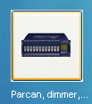
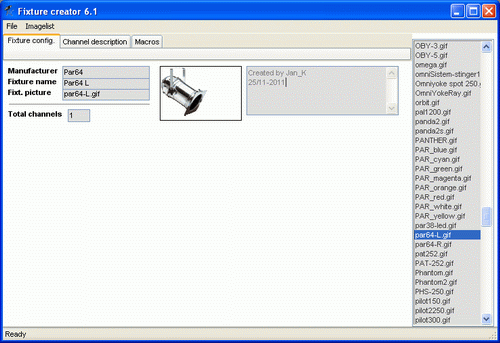
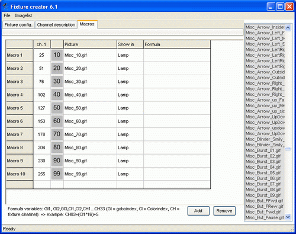
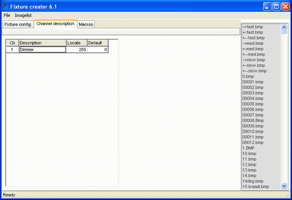
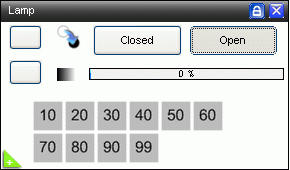
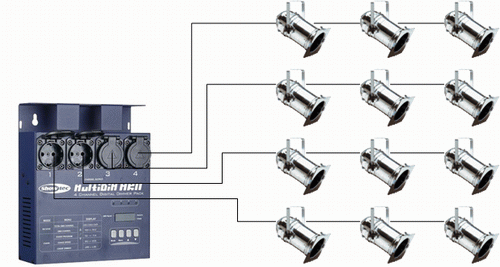
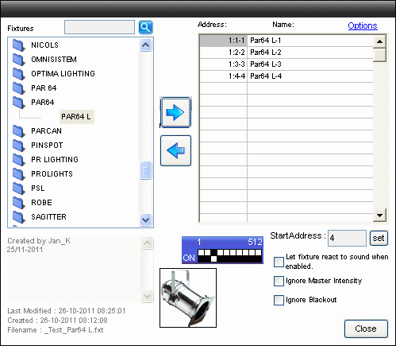
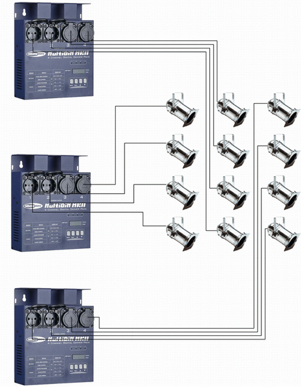
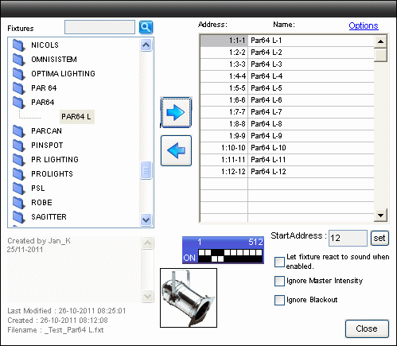

Table of Contents
Fixture Creator - Dimmer Tutorial
Dimmer is a quit simple fixture to create but depending on the applications there are more ways to create the fixture and get the optimal performance.
Dimmer comes in many shapes some as single channel other as multiple.
Common for these dimmers are that only 1 DMX channel is used for each main.
This fixtures can be made in many ways but either a single channel where more fixtures are to be used combined to get the whole dimmer pack or a simple fader control where only a number of sliders are available.
Link to Panel Description - Sliders
Here is the normal Dimmer approach.
When the Fixture Creator is opened in Dimmer mode only 1 channel has to be entered and Fixture Creator automatically generate a “Lamp” control with “Open, Closed and Intensity fader.
The Intensity is necessary for Freestyler so it can be incluted in “Master Intensity” and other functions like DMX400 also use the intensity channel.
Additional Macro are available which gives the possibility to add icons with pre defined values.
Note: Before making this fixture then have a look in “PAR64” or the “PARCAN” library there are all ready created fixtures and they are generic.
{kind=link}
Open Fixture Creator.
Open Fixture Creator in “Dimmer / Switch” mode.

Add Image (Find one on the net from the manufacturer) Scale it to the size. Fixture Creator - Pictures and Icons
Give the fixture a proper name.
Add info in the info box: Creator, 1Ch mode and so on.
Set the Total Channel to 1.
If the fixture is saved at this time then follow the name convention. Fixture Creator - File Name Convention

Note: It is possible to open Fixture Creator in other modes and then make the Dimmer fixture but then the intensity and open / Close control has to be configured manually.
Note: if you look at the Total channel you see in the example there is only a Total cahnnel of 1 you can also add more channels to 1 Fixture, But there is a BUT!
With freestyler its only possible to Controll 1 intensitie channel the First one, so this means if you add more channels to one fixture you can only use 1 Intensitie channel with the Externel Controll and If you use the FX it wil only use the First intensitie channel.
But with the Submaster this will works prefect, if you make a Intensite Sequence with more Intensitie channels it will work prefect with the Intensitie slider next to a Submaster.
{kind=link}
{kind=link}
Macro
Here some macro with 10% steps are added just to show the procedure.
The “Show in” is set to “Lamp” so they are added to this panel.
Link to Fixture Creator - Macro Configuration

{kind=link}
Channel Description
It may look like a minor thing to enter the Channel description and the default and locate value but this is what makes the fixture proff.
Link to Fixture Creator - Channel Description

Remember to save the fixture follow the name convention. Fixture Creator - File Name Convention
{kind=link}
Lamp Panel
In Freestyler the lamp pane l will look like this.
The macro icons are displayed be pressing the “+” in the green triangle.

{kind=link}
Practical use of fixture in FreeStyler.
In this first example a Dimmer 4 pack are used.
4 single channel controls are added in FreeStyler and it is possible to control 4 par cans lines.
Here 3 par cans are parallel on each line so when one channel is “on” then all 3 par cans are “on”.

This is how it look in Add fixture.
It is important that all addresses are filled when a multiple dimmer pack are used.
If not all adresses are occupied then place a dummy single channel fixture.

As an alternative set up more dimmer 4 packs on the “same addresses” can be used.
The benefit is that there are still only the 4 fixture in FreeStyler but the dimmer pack can be placed next to the par cans so long power cables and a cable puzzle can be avoided.
Imagine the fixtures are mounted on 3 T-bars. How many power cables that are to go up and down on each stand.
In this setup only one power cable and the DMX cable are go into each T-bar.

The fixture table looks the same as above.
Finally an example with full control on all par cans each Dimmer need a unique address.
This is how the fixture address list looks in this case.
Note it is possible to change the names on the fixtures to a more telling name.
It could be color names like “Red”.

{kind=link}
{kind=link}
{kind=link}
{kind=link}